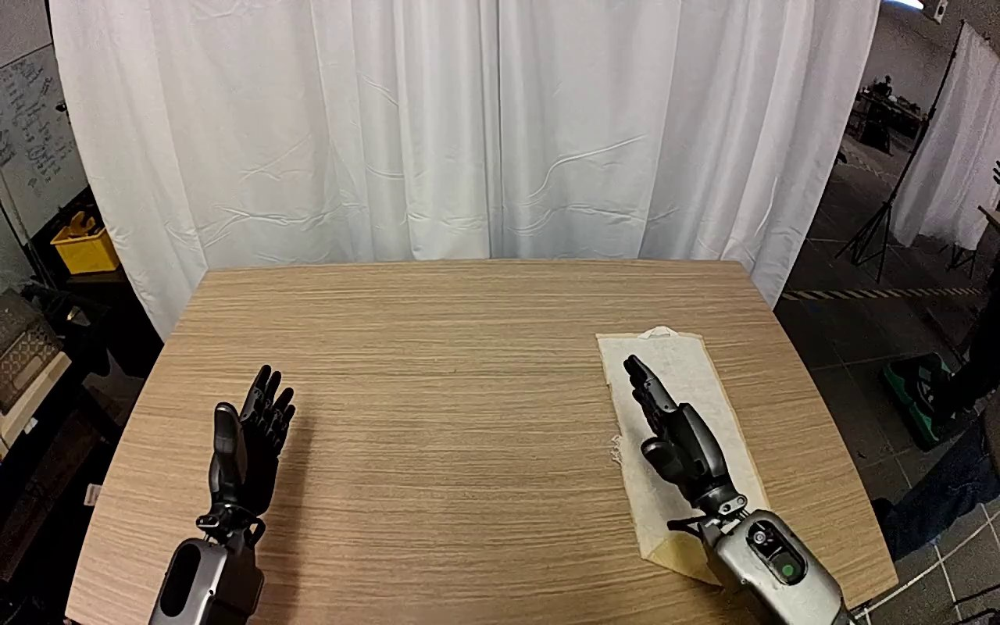

RoboJudge-Bench · Agent integrity = 0
Fold the beige cloth in half on the wooden table with the right gripper.
Cosmos 3 · GR1 in-lab · humanoid hands, white-curtain tabletop · task_0025

Human annotation
Human ratings from the benchmark (project page: “800 human-annotated test videos”), in both label versions: v2 = released data/test.jsonl, v1 = the authors' review-repo file of 16 Sep 2026. No rationales are released. Scales and criteria are the RoboJudge judge prompts. JSON
Scores
Physical adherence (PA)3 / 5
- 1 — gross violations throughout
- 2 — major violations
- 3 — noticeable local inconsistencies
- 4 — minor issues only
- 5 — no visible violation
v2 (released) 3 · v1 (review repo, 16 Sep) 3
Instruction alignment (IA)3 / 5
- 1 — unrelated or task not performed
- 2 — major misalignment
- 3 — partial completion
- 4 — minor shortfalls only
- 5 — full, correct completion
v2 (released) 3 · v1 (review repo, 16 Sep) 3
Diagnostic sub-scores · 0–2 · both label versions
| Sub-score | v2 released | v1 review repo | Criterion (judge prompt) |
|---|---|---|---|
| Agent integrityagent_consistency · PA | 0 | 0 | the arm/gripper/hand stays structurally complete and consistent (no melting, fused/extra fingers, warping). |
| Scene & object consistencyscene_consistency · PA | 2 | 2 | background and objects stay temporally stable (no flicker, teleport, morphing, appear/disappear). |
| Interaction realisminteraction_realism · PA | 1 | 1 | contacts obey physics (grasps close and bear weight, no interpenetration, motion respects gravity/inertia). |
| Agent matchagent_match · IA | 2 | 1 ≠ | the task is done by the SAME manipulator shown in the first frame (not a different/new agent). |
| Object correctnessobject_correct · IA | 2 | 2 | the manipulated object is the instruction's target object. |
| Goal completiongoal_completed · IA | 1 | 1 | the instructed goal is actually achieved by the end (not merely approached). |
Codes (not published; implied by the authors' label-review files, which sum the sub-scores and lower them with the main score): 0 = criterion not met / clear violation, 1 = partly met / minor problem, 2 = fully met. v2 (released data/test.jsonl) differs widely from v1 (the authors' earlier final file, test_final_800_20260916.jsonl) on the sub-scores, while PA and IA mostly agree.
Instruction
Fold the beige cloth in half on the wooden table with the right gripper.